Historia
Viexpon perustehtävä on auttaa yritystäsi vientiasioissa. Tarjoamme maksutonta vientineuvontaa yrityksille, jotka suunnittelevat viennin aloittamista, sekä yrityksille, jotka etsivät uutta näkökulmaa vientitoimintaansa. Yhdessä yrityksesi kanssa löydämme ratkaisun, joka palvelee juuri sinun yritystäsi.
Varaa tapaaminen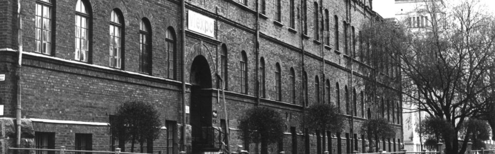
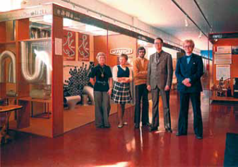
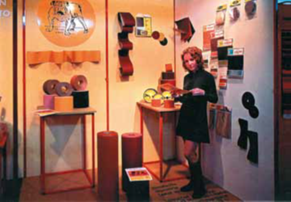
VIEXPO – vuodesta 1970 kehityksen kärjessä
Osuuskunta Viexpo (vienti + export) perustettiin tammikuussa 1970 Suomen ensimmäisenä alueellisena vienninedistämisorganisaationa. Viexpon perustamiseen johti 1960-luvulla alkanut elinkeinoelämän ulkomaanyhteyksien aiempaa aktiivisempi kehittäminen, joka kuitenkin keskittyi vahvasti pääkaupunkiseudulle. Pietarsaaressa siemen alueelliseen toimintaan alkoi itää nopeasti, sillä yhteydet Ruotsiin olivat jo kehittymässä hyvää vauhtia Kauppaoppilaitoksen laajentumisen ja laivaliikenteen alkamisen myötä. Alkuaikoina Viexpolla oli 31 jäsentä.
Kantavana ajatuksena oli rakentaa alueen teollisuutta vientiasioissa palveleva, pysyvä näyttelyhalli. Asia eteni ripeästi ja Strengbergin tupakkatehtaan näyttelyhalli avattiin 14.7.1970. Vuosikymmenen alussa tupakkatehtaan tiloissa oli keskimäärin satakunta näyttelyosastoa. Yritykset olivat esillä joko omilla osastoillaan tai kotikuntansa yhteisosastolla. Näyttelyhallitoiminnan lisäksi Viexpo piti tiivistä yhteyttä Suomen kaupallisiin sihteereihin ulkomaisissa lähetystöissä ja järjesti kontaktimatkoja mm. Lontooseen, Leningradiin, Osloon ja Tukholmaan. 1970-luvun puolivälissä Viexpo organisoi alueen yrityksille ensimmäisiä messuosastoja ulkomaisille messuille. Uumajan NOLIA –messuille 1975 mukaan lähti 15 yritystä ja seuraavana vuonna Polaria-messuille Tromssaan jopa 45. Merkittävä Mittnorden-yhteistyö käynnistyi 1970-luvun lopulla.
Tuotekehitykselle oli 1970–1980-lukujen vaihteessa valtava tarve ja Viexpo sai mahdollisuuden kanavoida silloisen kauppa- ja teollisuusministeriön valtiontukea tuotekehityspalveluihin.
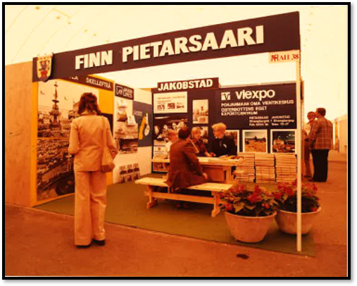
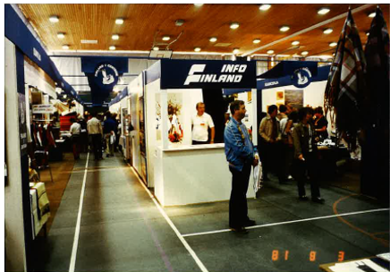
1980: Viexpo kasvaa ja toiminta laajenee
Viexpo on uskonut yhteistyön voimaan alusta alkaen. 1980-luvulla yhteistyö paikallisten kauppakamareiden kanssa johti Kokkolan ja Vaasan aluetoimistojen perustamiseen sekä Etelä-Pohjanmaalle sijoitettuun vientikonsultin virkaan. Vuoteen 1980 mennessä jäsenmäärä oli noussut 191:een. Tiedotuksen kehittämiseksi Viexpo alkoi julkaista omaa infolehtistään.
1982 Viexpo osoitti todellista IT-pioneerihenkeä ja astui tietokoneaikaan. Mikrotietokone ylläpiti vaivattomasti jäsen- ja näytteilleasettajarekisteriä. Rekisteriin koottiin ”kaikki merkittävät, tuottavat yritykset Pohjanmaalla” sekä Viexpon yhteydet ulkomaille.
Tärkeä askel oli myös Viexpon valinta Vaasan läänin Mittnorden-kauppahuoneeksi. Valinta merkitsi sekä Pohjoismaiden Ministerineuvoston taloudellista tukea että lupaa toimia suomalaisena järjestäjänä useimmissa Mittnorden-hankkeissa. Vuosikymmenen edetessä messuhankkeet ja suomalaiset yhteisosastot kasvoivat yhä tärkeämmäksi osaksi Viexpon toimintaa.
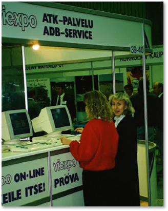
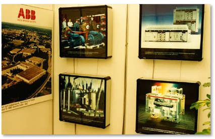
1990: Uusia otteita
Viexpon toiminta-alue määriteltiin käsittämään Pohjanmaan ja Keski-Pohjanmaan. Suomen Ulkomaankauppaliiton kanssa solmitun yhteistyösopimuksen ansiosta Viexpo sai VAM-konttorin (VAM=vientiasiamies) statuksen ja TE-keskuksia perustettaessa 1990-luvun lopulla Viexpo sai erityisaseman toiminta-alueellaan, mikä näkyy tänä päivänä muun muassa siten, että Viexpo toimii Pohjanmaan ELY-keskuksen kansainvälistymisyksikkönä.
Kahdenkymmenen vuoden jälkeen tupakkatehtaan näyttelyhallitoiminta lopetettiin vuonna 1990 Viexpon muutettua uusiin tiloihin Pietarsaaren Isollekadulle. Rautaesiripun kaaduttua kiinnostus itämarkkinoita kohtaan kasvoivat. Viexpo osallistui moniin tärkeisiin messuhankkeisiin ja järjesti myös itse matkoja mm. Venäjälle ja Baltian maihin.
Viexpo teki myös uuden aluevaltauksen perustaessaan pitkäaikaisen yhteistyökumppaninsa kanssa Pohjanmaan Patenttitoimisto Kolster & Viexpo Oy:n vuonna 1989. Viexpolla oli oma patenttiasiamies, joka neuvoi yrityksiä patentti-, tavaramerkki- ja mallistoasioissa sekä Suomessa että ulkomailla. Vuonna 1996 Kolster osti Viexpon osuuden yhtiöstä.
1990-luvulla alkoi kaksi uutta merkittävää toimintatapaa: Viexpon järjestämillä Fact Finding -matkoilla on 90-luvulta alkaen kerätty paljon tärkeää tietoa markkinoista ja kilpailijoista sekä solmittu tärkeitä kontakteja. Vientiverkosto (ent. vientirengas) kerää yhteen 4-6 toisiaan täydentävää mutta ei keskenään kilpailevaa yritystä, jotka yhdessä valitun yhteisvientipäällikön johdolla pyrkivät yhdessä avaamaan ovia valitulle kohdemarkkinalle.
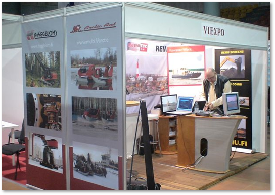
2000: Alakohtaista toimintaa
Kansainvälisten markkinoiden nopeat muutokset ovat 2000-luvulla olleet yhä merkittävämpiä ja niiden johdosta Viexpo päätti vuosituhannen alussa organisoida toimintansa uudella tavalla. Vastatakseen paremmin yritysten tarpeisiin, toiminta muuttui toimialakohtaiseksi: kone- ja metalliala, puu, rakennus- ja huonekaluala, elintarvikeala sekä vene- ja kulkuneuvoala.
Aasian ja Venäjän merkitys kasvoi voimakkaasti 2000-luvun alussa. Vuonna 2004 Viexpo palkkasi Aasian asiantuntijan ja samana vuonna käynnistyi myös Venäjähanke. Vientiverkostojen merkitys ja suosio on kasvanut vuosi vuodelta. Yritysten yhteistyö ja Viexpon tuki alentaa merkittävästi kynnystä ulkomaankaupan aloittamiseen. Tähän mennessä Viexpo on vetänyt jo kymmeniä vientiverkostoja, joiden kohdealueet ovat ympäri maailmaa.
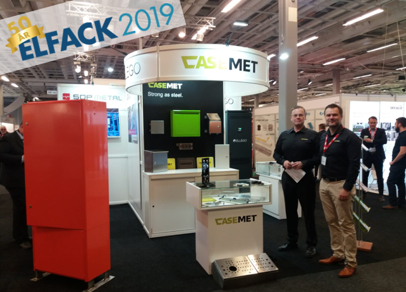
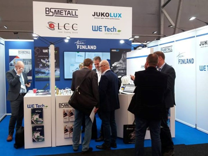
2010: Ajan hermolla
Viexpo on Suomen johtavia yhteisvientihankkeiden vetäjiä. Hankkeiden pääpaino on Euroopassa, ja erityisesti Skandinavia on viime vuosien aikana lisännyt suosiotaan suomalaisten yritysten viennin kohdemaana. Toimialat, jotka vetävät parhaiten tällä hetkellä ovat maa- ja metsätalousala, rakennusala, elintarvikeala ja energia-ala. Viexpo järjestää vuosittain suomalaisyrityksille useita mahdollisuuksia osallistua näytteilleasettajana kansainvälisiin, eri toimialojen johtaviin messutapahtumiin.
Viexpon kokeneet kansainvälistymisasiantuntijat sparraavat yrityksiä ja liikkuvat yhdessä yritysten kanssa maailmalla mm. messuilla ja markkinaselvitysmatkoilla.
Viexpo tarjoaa asiantuntevia ja asiakkaan tarpeisiin räätälöityjä kielipalveluja niin yrityksille, yhteisöille kuin yksityisillekin. Kielipalvelumme auttaa yrityksiä kommunikoimaan oikealla kielellä, kaikilla liike-elämän osa-alueilla.
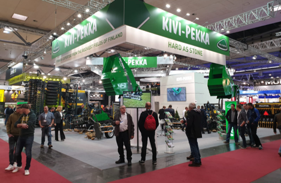
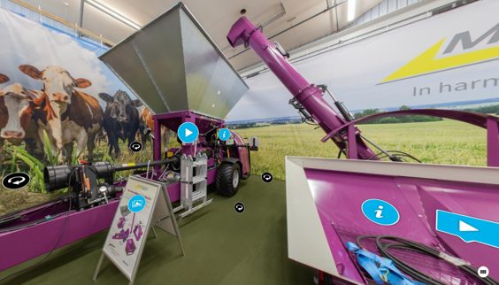
2020: Selkeytynyt rooli
Osuuskunta Viexpolla on merkittävä rooli yritysten kansainvälistymisen ja viennin edistämisessä alueellisesti ja kansallisesti, nyt jo yli 50 vuoden kokemuksella. Viexpon päätehtävänä on auttaa yrityksiä kasvamaan viennin kautta. Pohjoismaiset markkinat ovat usein tärkeä aloitusmarkkina vientiä aloittavalle yritykselle.
Viexpolla on jo vahva identiteetti kansallisena toimijana ja oleellisena osana Team Finland -verkostoa. Viexpon selkeytynyt rooli ruohonjuuritason toimijana, näkyy myös vientiyrityksille luotujen toimenpiteiden tilastossa.
Modernit työskentelytavat ja välineet ovat edelleen tehostaneet yhteydenpitoa yritysten ja yhteistyökumppanien kanssa. Lisäksi ne ovat parantaneet mahdollisuuksia toimia yritysten apuna vientiasioissa koko Suomessa.
Viexpon toimintatapaa arvostavat sekä yritykset että yhteistyökumppanit, mikä motivoi Viexpon tiimiä jatkamaan työtä viennin ja kansainvälisen yhteistyön kasvattamiseksi edelleen.
NordicHubin kautta Viexpo on myös profiloitunut toimijana pohjoismaisessa klusteriyhteistyössä. Klustereilla on selkeästi tärkeä rooli rajat ylittävässä yhteistyössä sekä viennissä, kansainvälistymisessä ja innovoinnissa.
NordicHub tuo klusterit ja verkostot yritysten ulottuville sekä edesauttaa yhteistyökumppanien löytämistä Suomesta ja Pohjoismaista, mikä luo mahdollisuuksia pohjoismaiselle yhteistyölle. Tavoitteena on luoda Suomen ja muiden Pohjoismaiden välille vahvat yhteistyöverkostot yrityksille ja klustereille ja siten vahvistaa Pohjoismaiden asemaa kansainvälisessä kilpailussa.